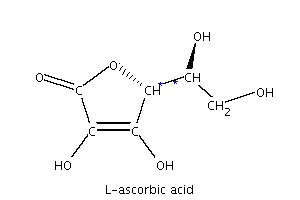
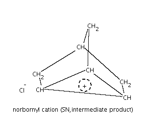

Chapter 8. Documentation
- Table of Contents
- DocBook
- API documentation
DocBook
This tutorial was generated by using the XML based DocBook DTD.
You will need Jade, the DocBook 4.2 definition files and finally the ISO Entities for generating a HTML and RTF output from the SGML(XML) files.
.cshrc-settings for Unix systems
# DocBook setenv DB_HTML /usr/share/sgml/docbook/docbook-dsssl-stylesheets-1.72/html/docbook.dsl setenv DB_PRINT /usr/share/sgml/docbook/docbook-dsssl-stylesheets-1.72/print/docbook.dsl setenv SGML_CATALOG_FILES /usr/share/sgml/docbook_4/docbook.cat:/usr/share/sgml/jade_dsl/catalog setenv JADE "jade" setenv CONVERT "convert"
.tcshrc-settings for Windows systems with cygwin
# DocBook
setenv DB_HTML "C:/cygwin/usr/share/sgml/docbook/db177/html/docbook.dsl"
setenv DB_PRINT "C:/cygwin/usr/share/sgml/docbook/db177/print/docbook.dsl"
setenv SGML_CATALOG_FILES "C:/cygwin/usr/share/sgml/docbook/docbook41/docbook.cat;\
C:/cygwin/usr/share/sgml/docbook/db177/common/catalog;\
C:/cygwin/usr/share/sgml/docbook/jade121/catalog"
setenv JADE "C:/cygwin/usr/share/sgml/docbook/jade121/jade"
setenv CONVERT "convert"The environment settings can be checked by calling
${JADE} -t sgml -d $DB_HTML JOELibTutorial.xml
${JADE} -t rtf -d $DB_PRINT JOELibTutorial.xmlfrom the docs/docbook directory.
DocBook and mathematical equations
A well known 'problem' or a definitively missing feature of DocBook is the generation of mathematical equations. We used a workaraound for Windows (Cygwin) and Linux systems. Mathematical equations can be generated by using LaTeX expressions, which will be converted from Enculapsed PostScript (EPS) files to GIF files by using ImageMagick's convert method. This seems at the moment one of the best solutions, because the LaTeX expressions are well known and the conversion method is well established. To faciliate the generation of the tutorial the shell scripts will be called from the ANT Makefile.
All LaTeX equations are defined directly in the SGML files by special LATEXEQUATION entries (quoted by in SGML comments). These entries will be parsed and the .tex files and image files will be created automatically.
DEPRECATED SOLUTION:
All equation definitions must be defined in the docs/docbook/formulas directory. All found *.tex files will be converted automatically to GIF images by calling the createImages.sh script.
Any equation in DocBook should use these images. If you will link these images from a subdirectory you must carfully check the correct links for the generated SGML or RTF output files. The image files will be copied to the correct directories using the ANT Makefile mechanism.
DocBook and molecular structures
Show stereo bonds and chiral atoms by assigning atom labels.
Table 8-1. Molecular structures with atom numbers and special atom labels
| Molecular structure | Options |
|---|---|
|  | <!-- MOLECULARSTRUCTURE structures/l_ascorbic_acid.mol structures/l_ascorbic_acid: width=300 height=200 rotate=270 labels=9=*;1=*--> |
| | <!-- MOLECULARSTRUCTURE structures/l_ascorbic_acid.mol structures/l_ascorbic_acid_numbers: width=300 height=200 shownumbers rotate=270 labels=9=*;1=*--> |
A norcamphan derivate can be used for substitution reactionS by obtaining a norbornyl cation with delocalised three ring with a cationic charge.
Table 8-2. Molecular structures with a delocalised ring
| Molecular structure | Options |
|---|---|
| | <!-- MOLECULARSTRUCTURE structures/exo_norcamphan.mol structures/exo_norcamphan: width=300 height=200 rotate=270--> |
|  | <!-- MOLECULARSTRUCTURE structures/exo_norcamphan_norbonyl_cation.mol structures/exo_norcamphan_norbonyl_cation: width=300 height=250 rotate=270 conjRing=2,3,4,c+ --> |
Retrosynthetic cuts for the michael addition (r1) and imin bond closure (r2) for the kroehnke pyridin synthesis.
Table 8-3. Molecular structures with retrosynthetic bond splittings
| Molecular structure | Options |
|---|---|
|
| <!-- MOLECULARSTRUCTURE structures/pyridin_kroehnke.mol structures/pyridin_kroehnke: width=300 height=200 rotate=270 hideEndCarbon orthoLines=1,l,sr2,6;5,r,sr2,6;2,r,sr1,3 labels=8=hal-keton;7=ab-keton;9=keton--> |

Last step of the kroehnke pyridin synthesis by creating the aromatic ring and splitting the positive pyridinium ring we used to activate the nucleophilic character of the alpha-keton position.
Table 8-4. Molecular structures with electron transfer arrows
| Molecular structure | Options |
|---|---|
|
| <!-- MOLECULARSTRUCTURE structures/pyridin_kroehnke_arom.mol structures/pyridin_kroehnke_arom: width=300 height=270 rotate=270 hideEndCarbon arrows=3,16,l,3,4;4,5,r,5,6;1,6,r,1,2;7,2,r,7 labels=13=ab-keton;14=hal-keton;15=keton--> |